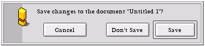

| The Interface Kit Table of Contents | The Interface Kit Index |
Derived from: BWindow > BLooper > BHandler > BArchivable
Declared in: be/interface/Alert.h
Library: libbe.so
Allocation: Constructor only
A BAlert displays a modal window that notifies the user of an error (or the like), and provides a set of buttons (three buttons, max) that lets the user respond to the situation. For example, here's a typical "unsaved changes" alert:

When the user clicks one of the buttons, the alert panel is automatically removed from the screen, the index of the chosen button (0,1, or 2, left to right) is reported to your app, and the BAlert object is deleted.
The buttons are automatically aligned within the panel (as shown above). The rightmost button is the default button—i.e., it's mapped to the Enter key. You can assign your own shortcuts through the SetShortcut() function (don't use BWindow::AddShortcut()).
BAlert objects must be constructed with new; you can't allocate a BAlert on the stack.
A BAlert object deletes itself when it's removed from the screen. You never need to delete the BAlert objects that you display.
The following code creates and displays the alert panel shown above:
BAlert *myAlert = new BAlert("title", "Save changes to ...")
"Cancel", "Don't save", "Save",
B_WIDTH_AS_USUAL, B_OFFSET_SPACING, B_WARNING_ALERT);
myAlert->SetShortcut(0, B_ESCAPE);
int32 button_index = alert->Go();
This is the canonical "Do it/Don't do it/Cancel" alert. Any alert that has a "Cancel" button should map the Escape key as a shortcut, as shown here.
The Go() function runs the panel: It displays the panel, removes the panel when the user is done, and returns the index of the button that the user clicked.
The default (no argument) version of Go() shown above is synchronous: It doesn't return until the user clicks a button. There's also an asynchronous version of Go() that returns immediately and (optionally) sends back the user's response in a BMessage. See Go() for details.
By default, a BAlert object uses the B_MODAL_APP_WINDOW_FEEL. This means that it blocks your application's other windows. If you want to broaden the feel so it blocks all windows (B_MODAL_ALL_WINDOW_FEEL), or restrict it so it blocks only a few of your app's windows (B_MODAL_SUBSET_WINDOW_FEEL), call BWindow::SetFeel(). In the subset case, you'll also have to call BWindow::AddToSubset().
Never change the object's look (B_MODAL_WINDOW_LOOK).
|
Creates an alert panel that's ready to be displayed. The arguments are:
After the BAlert is constructed, Go() must be called to display it. The panel is removed and the object is deleted after the user clicks a button.
|
Computes the "best" frame for an alert of the given width and height, and returns the top left corner of the computed frame in screen coordinates. This function is called automatically when you construct your BAlert; you never have to invoke it yourself.
|
Returns a pointer to the BButton object identified by index. Indices begin at 0 and count buttons from left to right. The BButton belongs to the BAlert object and should not be freed.
FrameResized() see BWindow::FrameResized()
|
Displays the alert panel. Go() can operate synchronously or asynchronously:
If you call Go() with a (literal) NULL argument...
alert->Go(NULL);
...the asynchronous version is used, but the BMessage isn't sent.
The synchronous version deletes the object before it returns; the asynchronous version deletes it after the message is sent. In either case, you should consider the BAlert object to be invalid after you call Go().
If the BAlert is sent a B_QUIT_REQUESTED message while the panel is still on-screen, the synchronous version of Go() returns -1; the asynchronous version suppresses the index-reporting message.
MessageReceived() see BWindow::MessageReceived()
|
These functions set and return the shortcut character that's mapped to the button at index. A given button can have only one shortcut except for the rightmost button, which, in addition to the shortcut that you give it here, is always mapped to B_ENTER.
If you create a "Cancel" button, you should give it a shortcut of B_ESCAPE.
|
Returns a pointer to the BTextView object that contains the textual information that's displayed in the panel. You can fiddle with this object but you mustn't delete it.
|
The alert_type constants represent the five alert icons:
| B_EMPTY_ALERT | B_INFO_ALERT | B_IDEA_ALERT | B_WARNING_ALERT | B_STOP_ALERT |
| (none) |
|
Used to set the spacing of the alert's buttons:
| Constant | Meaning |
|---|---|
| B_EVEN_SPACING | The buttons are evenly spaced. (This is used by the constructor without the spacing argument.) |
| B_OFFSET_SPACING | If the alert has more than one button, the leftmost button is shifted left to separate it from its neighbor(s). You should use this configuration for an alert that has a (leftmost) "Cancel" button, as shown in the illustration at the beginning of this document. |
| Field | Type code | Meaning |
|---|---|---|
| "_text" | B_STRING_TYPE | The alert's descriptive text. |
| "_atype" | B_INT32_TYPE | The alert_type value. |
| "_but_width" | B_INT32_TYPE | The button_width value. |
| "_but_key" (array) | B_INT32_TYPE | Keyboard shortcut values (one field per button). |
In a deep copy, the following views appear in the "_views" field:
| View name | Level | Meaning |
|---|---|---|
| "_master_" | 0 | Background view. |
| "_tv_" | 1 | BTextView for the alert panel's text. |
| "_b0_" | 1 | BButton with index 0. |
| "_b1_" | 1 | BButton with index 1. |
| "_b2_" | 1 | BButton with index 2. |
| The Interface Kit Table of Contents | The Interface Kit Index |
Copyright © 2000 Be, Inc. All rights reserved..